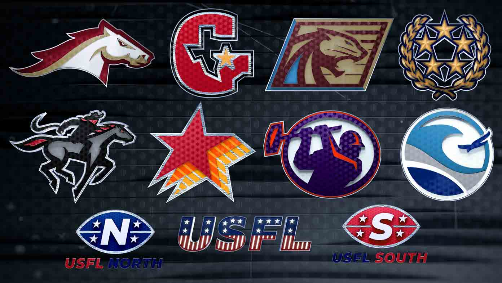

Football Properties
2022 Super Bowl 56
While serving as an animator throughout the 2021-2022 SNF season, the 10-person team also spent time building the Super Bowl 56 package and I specifically built out the future telestrator. As the Super Bowl got closer, I was also tasked with versioning out interstitials for all 32 teams and completing bio pics, bumps, and our 1-player, 2-player, retro, and word interstitials for the big game, which won me an Emmy for Outstanding Technical Team Studio on the Super Bowl LVI Pregame Show.
2021-2022 Sunday Night Football
My long-term commitment to an NBC football property began with assisting on the build for a new Peacock NFL show (Sunday Night Football Final, NBC's streaming show after SNF ends) right before the season started, along with tweaking the Cleveland Browns 3D logo and getting acquainted with the existing package by replacing all the 3D projects that required it. During the season, I was in charge of the weekly deliverables for SNF, like QB Walkouts, Bio Pics, Final Acts, Stingers, Scoreboards, Titlecards, L3rd elements, Bumps, and Personality Tags. I also enjoyed building animations for the LA Rams Oculus digital scoreboard at Sofi Stadium for SNF games played there.
2022 United States Football League

Without having the NHL rights and the busiest season for NBC over (Super Bowl 56 and XXIV Olympic Winter Games at the same time), I was moved over to assist in building the new football league package for the the USFL, which shared broadcast rights with FOX. The package was modeled after the past SNF seasons as the SNF look was rebranded to the Super Bowl look after the season ended. After completion, I was the one to maintain the property throughout the season for the weekly production requests.
2020 Rotoworld Open
If you made it this far, my football work actually started in 2020 with the one-off task of creating an open for Rotoworld's website, but I don't count it.